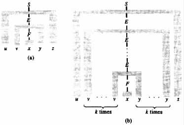
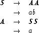
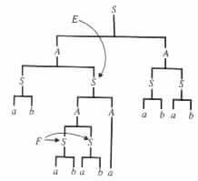
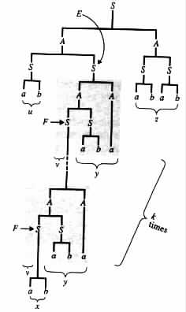
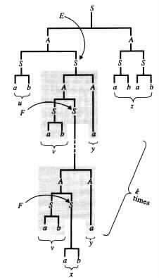
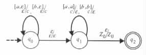

0, because otherwise T0 would also be a derivation tree for
w, contradicting the assumption that T is a minimal derivation tree for w.
0, because otherwise T0 would also be a derivation tree for
w, contradicting the assumption that T is a minimal derivation tree for w. 
A Pumping Lemma for Context-Free Languages
Applications of the Pumping Lemma
A Generalization for the Pumping Lemma
The study of the limitations of finite-memory programs in Section 2.4 relied on the following observation: A subcomputation of an accepting computation of a finite-memory program can be pumped to obtain new accepting computations if the subcomputation starts and ends at the same state. For recursive finite-domain programs similar, but somewhat more complex, conditions are needed to allow pumping of subcomputations.
A Pumping Lemma for Context-Free Languages
The proof of the following theorem uses the abstraction of context-free grammars to provide conditions under which subcomputations of recursive finite-domain programs can be pumped. The corresponding theorem for the degenerated case of finite-memory programs is implied by the choice of u = v = e.
Theorem 3.4.1 (Pumping lemma for context-free languages) Every context-free language L has a positive integer constant m with the following property. If w is in L and |w| ³ m, then w can be written as uvxyz, where uvkxykz is in L for each k ³ 0. Moreover, |vxy| £ m and |vy| > 0.
Proof Let G = <N, S, P, S> be any context-free grammar. Use t to denote the number of symbols in the longest right-hand side of the production rules of G. With no loss of generality assume that t ³ 2. Use |N| to denote the number of nonterminal symbols in N. Choose m to equal t|N|+1.
Consider any w in L(G) such that |w| ³ m. Let T denote a derivation tree for w that is minimal for w in the number of nodes. Let p be a longest path from the root to a leaf in T. Let n denote the number of nodes in p.
The number of leaves in T is at most tn-1. Thus, tn-1 ³ |w| and |w| ³ m = t|N|+1 imply that n ³ |N| + 2. That is, the path p must have two nodes whose corresponding nonterminal symbols, say E and F, are equal. As a result, w can be written as uvxyz, where vxy and x are the strings that correspond to the leaves of the subtrees of T with roots E and F, respectively (see Figure 3.4.1(a)).
|

|
Let Tk be the derivation tree T modified so that the subtree of E, excluding the subtree of F, is pumped k times (see Figure 3.4.1(b)). Then Tk is also a derivation tree in G for each k ³ 0. It follows that uvkxykz, which corresponds to the leaves of Tk, is also in L(G) for each k ³ 0.
A choice of E and F from the last |N| + 1 nonterminal symbols in the path p implies
that |vxy| £ t|N|+1 = m, because each path from E to a leaf contains at most |N| + 2
nodes. However, |vy| 0, because otherwise T0 would also be a derivation tree for
w, contradicting the assumption that T is a minimal derivation tree for w.
Example 3.4.1 Let G = <N, S, P, S> be the context-free grammar whose production rules are listed below.

For G, using the terminology of the proof of the previous theorem, t = 2, |N| = 2, and m = 8. The string w = (ab)3a(ab)2 has the derivation tree given in Figure 3.4.2(a).
|
 (a)  (b)  (c)
|
w has two decompositions that satisfy the constraints of the proof of the pumping lemma. One is of the form u = ab, v = e, x = ab, y = aba, z = abab; the other is of the form u = ab, v = ab, x = ab, y = a, z = abab.
(ab)2(aba)k(ab)2 and ab(ab)kabak(ab)2 are the new strings in the language for k ³ 0,
that the proof implies for w by pumping. Figures 3.4.2(b) and 3.4.2(c), respectively, show
the derivation trees Tk for these strings.
Applications of the Pumping Lemma
The pumping lemma for context-free languages can be used to show that a language is not context-free. The method is similar to that for using the pumping lemma for regular languages to show that a language is not regular.
Example 3.4.2 Let L be the language { anbncn | n ³ 0 }. To show that L is not a context-free language, assume to the contrary that L is context-free. Consider the choice of w = ambmcm, where m is the constant implied by the pumping lemma for L.
By the lemma, ambmcm can be written as uvxyz, where |vxy| £ m, |vy| > 0, and the decomposition satisfies the following conditions.
Since the pumping lemma does not hold for ambmcm, it also does not hold for L. It
follows, therefore, that the assumption that L is a context-free language is false.
As in the case of the pumping lemma for regular languages the choice of the string w is of critical importance when trying to show that a language is not context-free.
Example 3.4.3 Consider the language L = { aa | a is in {a, b}* }. To show that L is not a context-free language assume the contrary. Let m be the constant implied by the pumping lemma for L.
For the choice w = ambmambm the pumping lemma implies a decomposition uvxyz
such that |vxy| £ m and |vy| > 0. For such a choice uv0xy0z = uxz = aibjasbt with
either i s or j
s or j t. In either case, uxz is not in L. As a result, L cannot be
context-free.
t. In either case, uxz is not in L. As a result, L cannot be
context-free.
On the other hand, for the choice w = ambamb a decomposition uvxyz that satisfies
|vxy| £ m and |vy| > 0 might be of the form v = y = aj with b in x for some j > 0.
With such a decomposition uvkxykz = am+(k-1)jbam+(k-1)jb is also in L for all k ³ 0.
Consequently the latter choice for w does not imply the desired contradiction.
A Generalization for the Pumping Lemma
The pumping lemma for context-free languages can be generalized to relations that are computable by pushdown transducers. This generalized pumping lemma, in turn, can be used to determine relations that cannot be computed by pushdown transducers.
Theorem 3.4.2 For each relation R that is computable by a pushdown transducer, there exists a constant m such that the following holds for each (w1, w2) in R. If |w1| + |w2| ³ m, then w1 can be written as u1v1x1y1z1 and w2 can be written as u2v2x2y2z2, where (u1v1kx1y1kz1, u2v2kx2y2kz2) is also in R for each k ³ 0. Moreover, |v1x1y1| + |v2x2y2| £ m and |v1y1| + |v2y2| > 0.
Proof
Consider any pushdown transducer M1. Let M2 be the pushdown automaton obtained
from M1 by replacing each transition rule of the form (q, a, b, p, g, r) with a
transition rule of the form (q, [a, r], b, p, g) if the inequality [a, r] [e, e] hols,
and with a transition rule of the form (q, e, b, p, g) if the equality [a, r] = [e, e]
holds. Let h1 and h2 be the projection functions defined in the following way:
h1(e) = h2(e) = e, h1([a, r]) = a, h2([a, r]) = r, h1([a, r]w) = h1([a, r])h1(w), and
h2([a, r]w) = h2([a, r])h2(w).
[e, e] hols,
and with a transition rule of the form (q, e, b, p, g) if the equality [a, r] = [e, e]
holds. Let h1 and h2 be the projection functions defined in the following way:
h1(e) = h2(e) = e, h1([a, r]) = a, h2([a, r]) = r, h1([a, r]w) = h1([a, r])h1(w), and
h2([a, r]w) = h2([a, r])h2(w).
By construction M2 encodes in its inputs the inputs and outputs of M1. h1 and h2, respectively, determine the values of these encoded inputs and outputs. As a result, (w1, w2) is in R(M1) if and only if w is in L(M2) for some w such that h1(w) = w1 and h2(w) = w2. Use m' to denote the constant implied by the pumping lemma for context-free languages for L(M2), and choose m = 2m'.
Consider any (w1, w2) in the relation R(M1) such that |w1| + |w2| ³ m. Then there
is some w in the language L(M2) such that h1(w) = w1, h2(w) = w2, and
|w| ³ m/2 = m'. By the pumping lemma for context-free languages w can be written as
uvxyz, where |vxy| £ m', |vy| > 0, and uvkxykz is in L(M2) for each k ³ 0. The result
then follows if one chooses u1 = h1(u), u2 = h2(u), v1 = h1(v), v2 = h2(v),
x1 = h1(x), x2 = h2(x), y1 = h1(y), y2 = h2(y), z1 = h1(z), and z2 = k2(z).
Example 3.4.4 Let M1 be the pushdown transducer whose transition diagram is given in Figure 3.2.3. Using the terminology of the proof of Theorem 3.4.2, M2 is the pushdown automaton whose transition diagram is given in Figure 3.4.3.
|

|